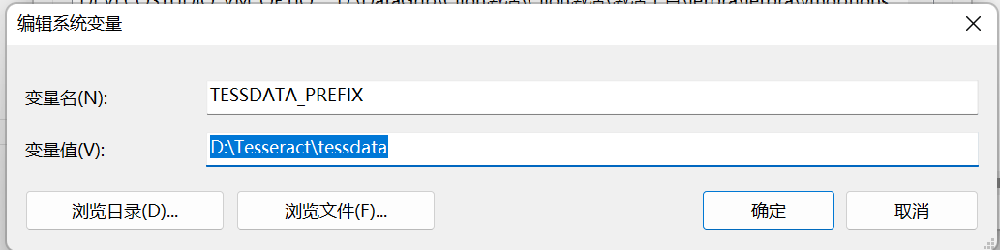
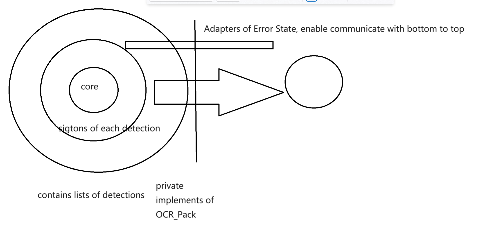

OCR开发库日志记录
OCR开发库日志
简介
本次我二次封装的是Tesseract这个OCR库。我们首先扯一下啥是OCR，它指直接将包含文本的图像识别为计算机文字（计算机黑白点阵）的技术。图像中的文本一般为印刷体文本。
首先，想要使用这个库就需要下载相关的二进制资源（这里我不想编译了，没有特殊的需求），只需要在Home · UB-Mannheim/tesseract Wiki (github.com)下载库即可。值得注意的是他会有选项让你勾选是否下载文字数据集。我的建议是直接杀去github仓库下而不是勾上这个选项，否则所有的语言的文字数据集，造成不必要的硬盘空间浪费。
下载结束，我们需要配置的是指向数据集地址的系统变量：

TESSDATA_PREFIX 务必指定这个变量，否则当我们在使用command-line测试的时候会爆出错误，也就是无法加载数据集的错误。
下一步就是找到tesseract.exe，他就在我们下载的位置下方，其基本的指令格式是
tesseract pic.png path/to/res/without/txtsuffix -l language_string 识别中文的时候，使用chi_sim来进行识别
层次分析
在本次开发OCR version I中，设计了如下几个层次的OCR类层次。

简单的讲，我们就是将核心的识别封装在了core里，外层包裹了一个Singtons参数配置的SingtonsOCR_Package作为最小的内存分配单位的识别包。然后以数组的形式分配到了Private私有实现的OCR_Pack里，我们最后实际上向外提供的接口就是OCR_Pack类的类接口，为我们的生成库做了准备。
关于一些核心实现
并发识别
其中，本次首次采用了并发线程加速识别的技术，从而提升了识别的效率。这次仿照类似TCP发包收包的实现，给每一个最小单位的Singtons分配了一个顺序的index防止识别乱序，内部上使用sortByIndex方法在我们的识别任务全部结束后进行Index排序。
Signals传递信号
这次我传递错误使用的是signals传递错误，从而减少硬编码。错误的State层次最低只是停留在Private实现内部，对于Singtons包则是将排查错误递交给了上层并且提供了所有的检查资源的接口。在我看来，这可以有效的防止过多的重复的错误设置，化简系统的复杂度。
另一方面，本次的识别还传递了关于进度的接口，其信号的发出源是Singtons包，他传递了是否完成单个任务的包，向上连接到的是Private私有实现，而不是实际公开的包，Private私有实现将会对这个信号和资源进行处理后再次转发到由公开部分实现的信号接口，从而达到解耦合的目的。
如何快速的设置qmake生成库
作为CMake修改是很简单的，那qmake怎么办呢？
第一步就是设置生成模板，以及对应的宏定义：
DEFINES += OCRPACKAGE_LIBRARY
TEMPLATE = lib 其二就是设置导出的符号：
#if defined(OCRPACKAGE_LIBRARY)
# define OCRPACKAG_EXPORT Q_DECL_EXPORT
#else
# define OCRPACKAG_EXPORT Q_DECL_IMPORT
#endif
class OCRPACKAG_EXPORT OCRPackage : public QObject 给我们的导出符号作为一个依据。
然后生成库即可。